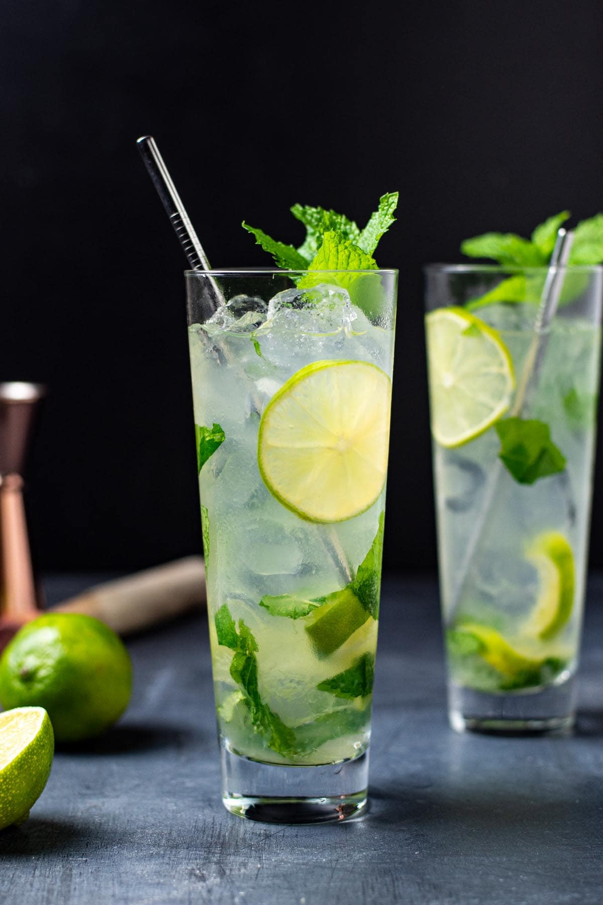

Mojito

Description
This recipe found here, makes a refreshing classic mojito cocktail, perfect for the summer.
For more cocktail recipes visit the Home
Ingredients
This recipe makes 1 mojito cocktail.
- Mint: 10 fresh mint leaves.
- Lime: 1/2 a medium lime cut into 3 wedges.
- Sugar: 2 tbsp of sugar or to taste.
- Ice: 1 cup ice or as needed.
- White Rum: 1.5 fluid ounces of white rum.
- Club Soda: 1/2 cup of club soda or as needed.
Steps
This recipe requires a sturdy glass and a muddler or some tool for crushing the limes and mint.
- Place 1lime wedge and mint into a sturdy glass. Crush them with a muddler or a similar tool to mix them.
- Add the sugar and remain lime wedges and crush them. Do no strain at any point.
- Fill glass with ice cubes.
- Add white rum and clubsoda, add more sugar as needed
- Serve and Enjoy!